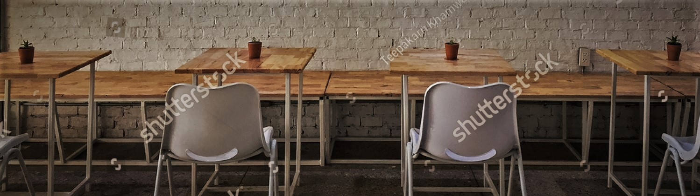

Perlbohne Karlsruhe
Information about Owner
Wir!
Wie zwei Bohnen lernten wir uns 2009 als Mitarbeiterinnen
in einer der führenden deutschen Kaffeebarketten in Karlsruhe kennen.
Sehr schnell haben uns unsere Kaffeeleidenschaft und unser Teamwork zusammen gebracht.
So entstand Jahre später: die Perlbohne. Mit Kaffee möchten wir das Leben
von Menschen bereichern: das Leben derer, die ihn anbauen, bis hin zu denjenigen,
die ihn mit großer Freude genießen. Daher achten wir auf den Prozess vom
Anbau der Bohne bis hin zum Endprodukt. Wir beziehen unseren Kaffee ausschließlich von Röstern, die diesen aus direktem Handel weiter verarbeiten. Dieser hochwertige Prozess endet bei uns, wenn der Kaffee in die Tasse fließt und der köstliche Duft auf ein Latte Art Kunstwerk trifft und zum perfekten Genuss für alle Sinne wird.
Wenn man die Tasse absetzt und versonnen sagt:
„Hmmm, Wunderbar!“ – dann ist die Mission der Perlbohnen erfüllt!
Location
Our Gift Cards: